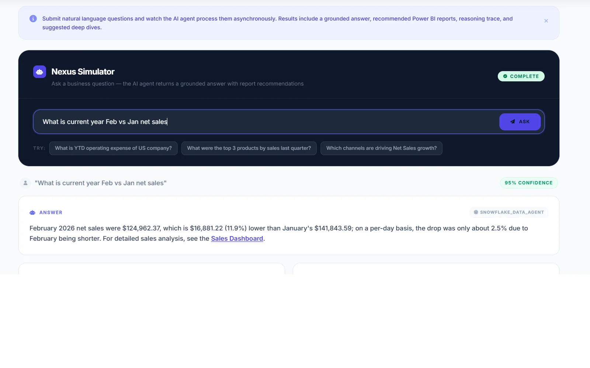
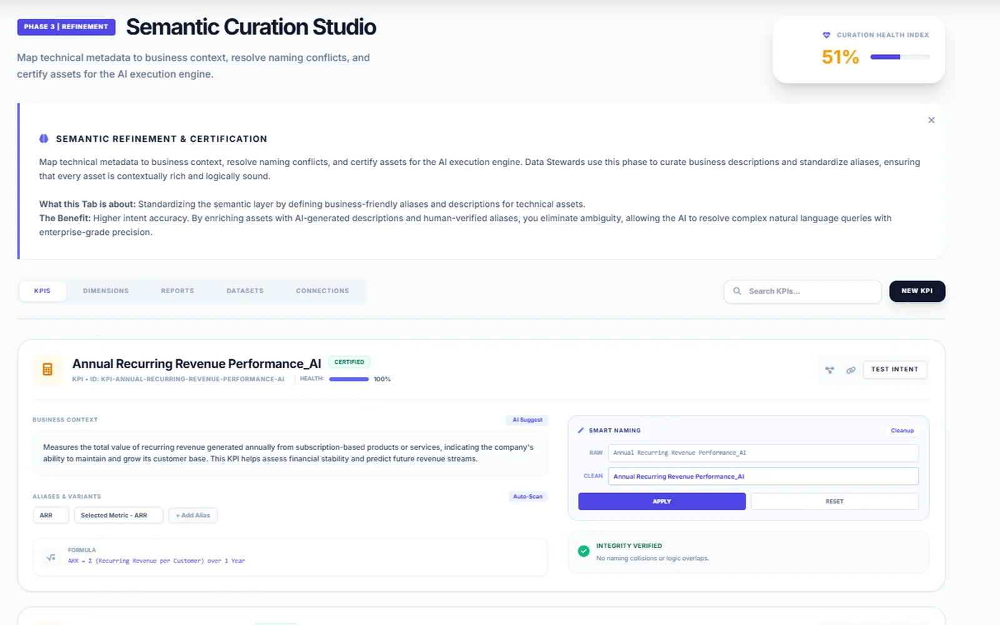
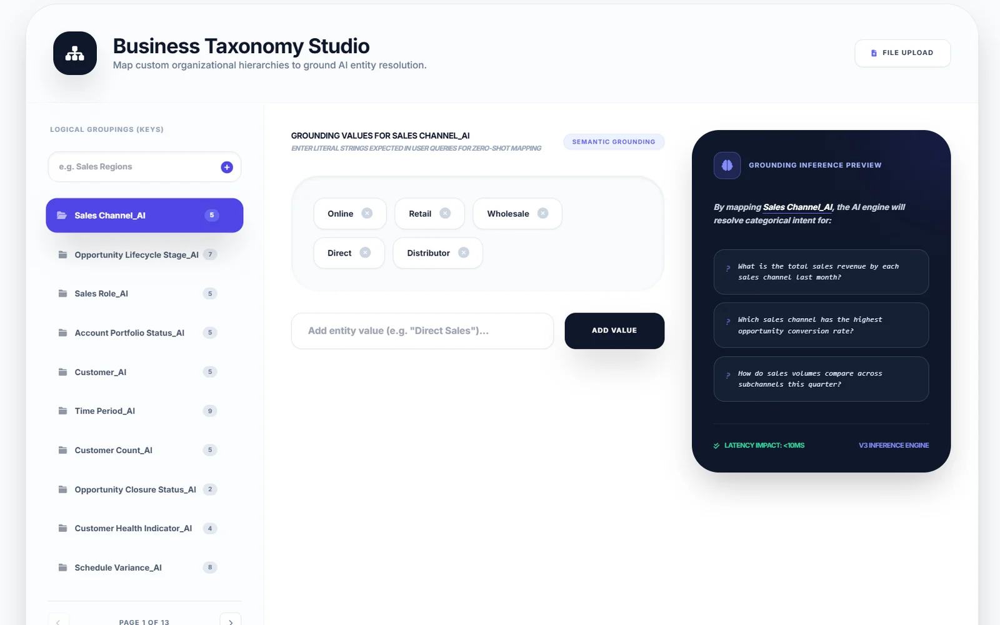
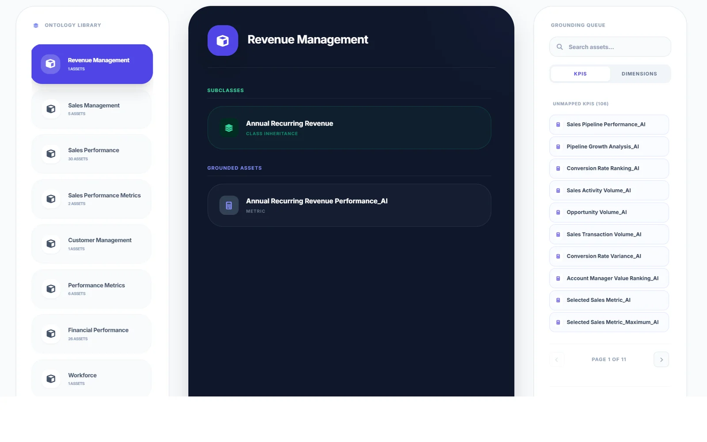
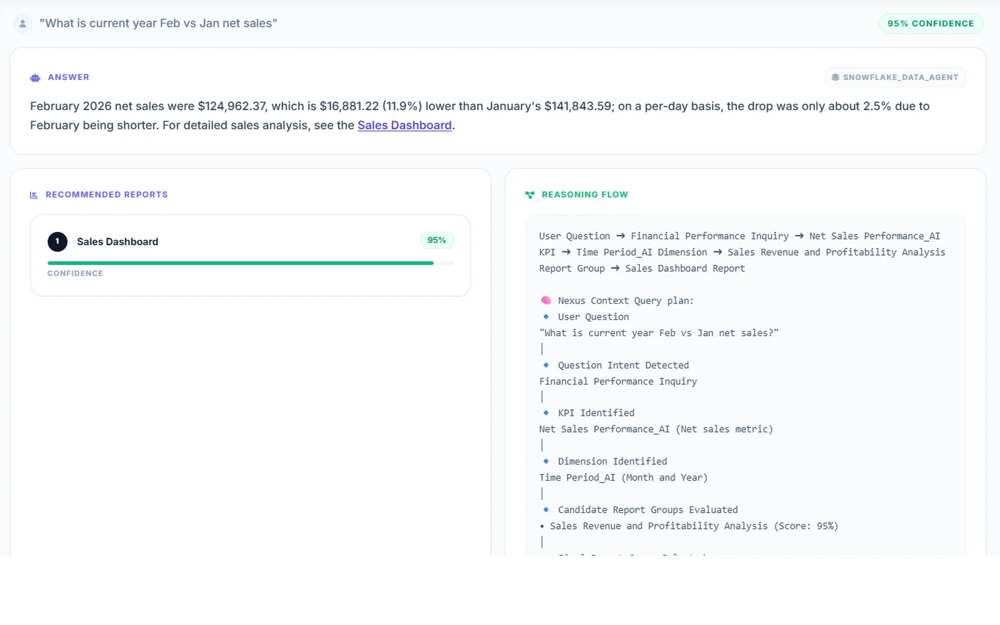

Nexus | Understand
The analytics context layer for AI
Nexus gives AI copilots and agents the business context behind your reports and KPIs. It turns governed BI metadata, KPI definitions, and business relationships into a context layer AI can use to interpret questions the way your business defines them.

Connect governed analytics context to AI
Talk to us about how Nexus can fit into your AI environment.
Why AI needs your business definitions
Ask two AI tools for net sales and they may use different definitions, filters, or reports. Nexus gives AI the business context to interpret the question and identify the relevant analytics.
-
Conflicting KPI definitions
Give AI the approved meaning of a KPI, including the terms and dimensions your teams use.
-
Unclear source authority
Use certification and ownership metadata from Atlas to help identify which reports to reference.
-
Ambiguous business terms
Use approved aliases and business relationships to help AI interpret terms such as direct sales in the right context.
Build on the BI metadata you already have
Nexus uses metadata from Atlas as a starting point. Data stewards add business terms and resolve conflicting definitions so AI can use the context across reports, KPIs, and business domains.
What Nexus uses to build context
Nexus uses structural metadata such as schema information, query patterns, and relationships to build the context layer. That process uses metadata, while access to underlying data for a KPI answer depends on the AI application and its setup.
Nexus builds context in four steps
-
Import
Bring in governed metadata from Atlas and add metadata from manual sources where needed.
-
Curate
Review definitions, aliases, descriptions, and ownership gaps in the Semantic Curation Studio.
-
Map
Organize reports and KPIs by business domain and map their relationships in the Knowledge Graph.
-
Use
Give AI applications the context to interpret a business question and identify the relevant metrics and reports.
Review business context in the Semantic Curation Studio
Data stewards review descriptions and aliases, resolve naming conflicts, and identify gaps such as missing owners or uncertified reports. The Curation Health Index helps teams track progress across their analytics assets.

Map everyday language to business definitions
Curate the terms and aliases teams use when they ask questions. For example, clarify whether online sales is a separate channel or a category that includes several channels.

See how your reports, KPIs, and business concepts connect
The Nexus Knowledge Graph connects reports, KPIs, and business concepts across domains. For example, it can help an AI application identify the approved net sales metric, the dimensions used to break it down, and the reports that provide the relevant context.

See the context behind an AI analytics question
A question about net sales variance needs a KPI definition, a comparison period, and the relevant sales dimensions. Nexus gives AI the business context to interpret those terms and identify which reports to reference.
Example questions Nexus can help answer
- How did net sales compare with plan by product segment in January and February 2026?
- Which sales channels contributed most to the net sales variance versus plan in February 2026?
- What are year-to-date operating expenses for the current fiscal year?
- How have operating expenses changed month over month this fiscal year?

Reuse governed context across AI use cases
Use the same approved KPI definitions, business terms, and report relationships across multiple copilots and analytics use cases. Teams can build on the context they have already curated as they expand to new questions and business domains.
One platform, three layers
Atlas provides governed analytics metadata. Nexus enriches it with business context for AI. Maestro uses trusted analytics and context in governed workflows.
-
Atlas | Know
Catalog, certify, and govern reports, dashboards, and KPIs.
-
You are here
Nexus | Understand
Give AI the definitions and relationships it needs to interpret analytics.
-
Maestro | Act
Run governed workflows and capture how decisions were made.
See how Nexus gives AI context for your KPIs
Walk through a business question and see how Nexus connects it to the relevant KPI definition, dimensions, and source reports.